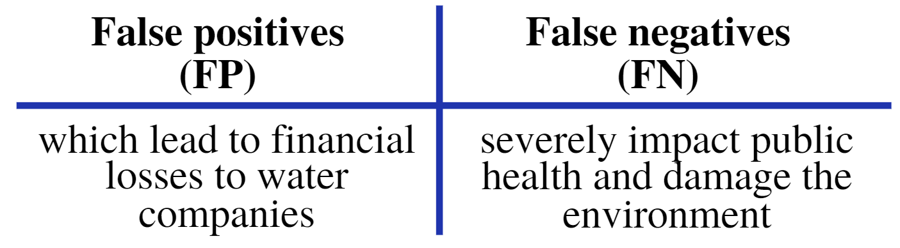

Introduction
Providing clean and safe drinking water is a crucial task for any water supply company. In such an activity, automatic anomaly detection plays a critical role in drinking water quality monitoring.
Recent anomaly detection techniques use tools from the machine learning field, where after a supervised learning process most of the time performed with a single objective cost function, a given machine learning representation can classify an event as normal or as an anomaly. In such cases, they are referred to as virtual or soft sensors: instead of having a physical device, information from other sources is mixed in order to infer an anomaly event.
However, companies need solutions that better balance the trade-off between false positives (FP) and false negatives (FN), in which multi-objective optimization could be an interesting tool. This work dealt with the simplest classification machine, logistic regression, trained with multi-objective optimization approach using real-word dataset in the area of anomaly detection in water distribution systems.
